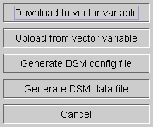
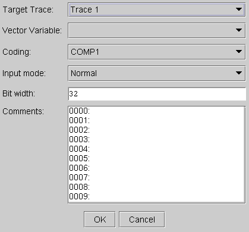
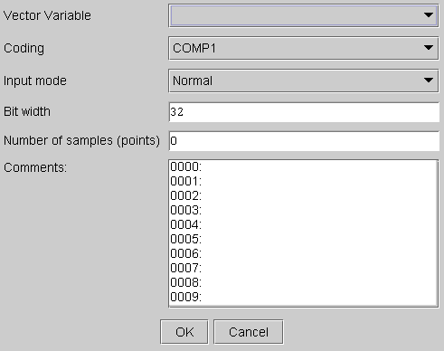
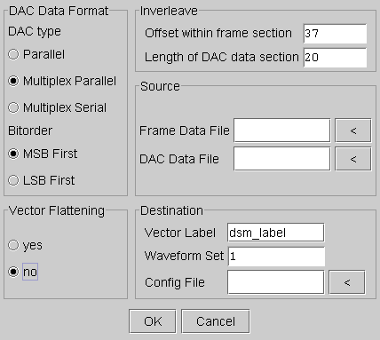
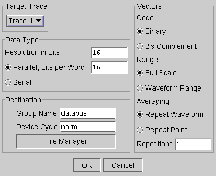

DSM...
This menu item accesses the DSM dialog box. This dialog box activates the DSMT (DAC Source Memory Tool), which generates a vector setup to test chips with embedded DAC. It allows you to specify DAC vectors independent of digital vectors. You must specify a target trace ID.
The DAC Memory Source Tool (DSMT) is a utility program which supports the vector memory setup for DAC test.

Click the Download to vector variable button to display the dialog window for configuring the vector variable:

To upload data from a vector variable to the Signal Analyzer, click the Upload from vector variable button:

To generate a per-pin sequencer subroutine (PPSS) three files are required:
- Configuration file, also called "DSM Config File" describes where and how to insert the DAC
input codes.

- DAC vector file, also called "DSM Data File", contains the DAC input codes.

- Frame vector file, contains the frame codes.